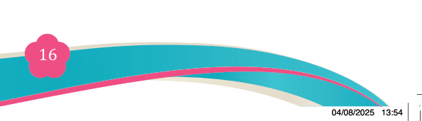
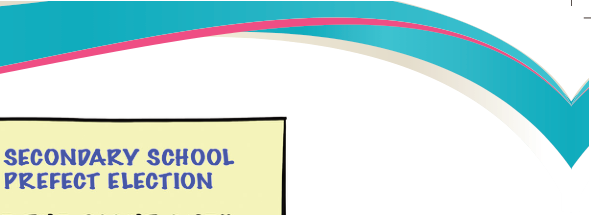
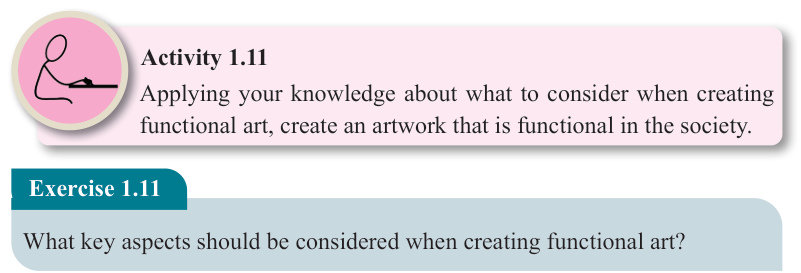

Figure 1.14: A complete layout of a poster design and its social cultural context


Activity 1.11
Applying your knowledge about what to consider when creating functional art, create an artwork that is functional in the society.
Exercise 1.11
What key aspects should be considered when creating functional art?
Analysing artwork by using functionalism theory
Functionalist analysis focuses on examining the purpose, use, and social function of
the artwork rather than its visual style, symbolic meaning, or emotional expression.
The following guides help you to analyse art using a functionalist approach.
(a) Determine the Artwork’s purpose: Ask what the artwork was created for,
such as to educate, celebrate, protest, serve religious rituals or fulfill practical
needs.
(b) Examine the social and cultural context: Consider the time, place, and community in which the artwork was made. What social values traditions, or challenges influenced its creation.
(c) Identify the intended audience or users: Analyse who the artwork was made for and how it was used. This reveals how the artwork functioned in people’s lives.
(d) Analyse how form support function: Examine how materials, style and design choices contribute to the artwork’s purpose, whether for durability, visibility or symbolism.